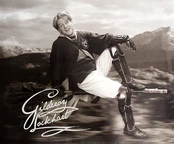

Коли Локонс залишив Гоґвортс, серед шкільного персоналу пронісся зітхання полегшення. Незабаром звістки про нього дійшли з далеких країн, де чутки про його подвиги почали стрімко поширюватися. Багато хто з колишніх учителів Локонса почав думати, що були несправедливі до нього, тому що він демонстрував хоробрість і гнучкість, рятуючи далекі міста й села від небезпечних, Темних істот.
Оригінал Фільму
Гаррі Поттер — це британсько-американська серія кінофільмів на основі творів про пригоди головного героя Гаррі Поттера письменниці Джоан Роулінг. Серія складається з восьми частин, починаючи з фільму «Гаррі Поттер та Філософський камінь» (2001 р.) і закінчуючи «Гаррі Поттер і Смертельні реліквії: Частина 2» (2011 р.). Спін-оф серії буде складатися з п'яти фільмів, починаючи з «Фантастичні звірі і де їх шукати» (2016 р.).
Біографія

Златопуст Локонс (англ. Gilderoy Lockhart) - відомий письменник у світі чарівників. Надзвичайно хвалькуватий, вельми стурбований підтриманням своєї популярності, обожнює фотографуватися, роздавати автографи та відповідати на листи читачів. Вважає своїм обов'язком усім давати поради в будь-яких справах, навіть якщо нічого в них не розуміє. Самозакоханість Локонса переходить усі межі. Він нічого і нікого не бачить крім себе. Усе, що не може так чи інакше його возвеличити, Златопуст просто не помітить.
Його Роль
Після нападу на Місіс Норріс Золоте Тріо вирішує зварити Оборотне зілля, щоб перевірити причетність Малфоя до цього інциденту. Рецепт є в книжці "Сильнодіючі зілля", але вона зберігається в Забороненій секції, і отримати її можна тільки з письмового дозволу вчителя. Просто так дозвіл ніхто не дасть, "хіба вже знайдеться зовсім ідіот". Тоді Герміона після занять підходить до Локонса і просить його підписати дозвіл на книжку, щоб вона могла краще розібратися в повільнодіючих отрутах з її улюбленої книжки "Забави з упирями", адже професор ЗОТІ тоді так вправно відцідив отруту за допомогою чайного ситечка! Задоволений Локонс виводить павиним пером хитромудрий розчерк на дозволі, навіть не спромігшись подивитися, під чим він підписується (можливо, йому здавалося, що він просто дає черговий автограф). Підсумок: Гаррі, Рон і Герміона отримують можливість приготувати зілля і допитати Малфоя. У результаті з'ясувалося, що Драко не є спадкоємцем Слізеріна, Таємну Кімнату востаннє відкривали п'ятдесят років тому, і тоді вбили бруднокровку.
Факультет
Ни в одной книге о Гарри Поттере не назван факультет, который оканчивал Локонс. В фильме «Гарри Поттер и Тайная комната» мелькает чёрно-белая фотография Локонса, на которой он одет в мантию, где изображён герб с птицей. Это дало фанатам повод думать, что Локонс заканчивал факультет Когтевран. В пользу этого говорит тот факт, что фильмы консультировала автор серии Джоан Роулинг, а значит, могла сказать про факультетскую принадлежность Златопуста. Противники этой версии указывают на ошибки и киноляпы, допущенные создателями фильмов (например, когтевранка Падма Патил одета в одной из сцен в гриффиндорскую мантию и даже ходит по гостиной Грифиндора в 1994—1995 гг.). Также среди фанатов существовала версия, что Локонс оканчивал факультет Пуффендуй. Информация с Pottermore, согласно которой Локонс учился на Когтверане, окончательно поставила точку в этом вопросе.
Ранні роки Локонса
Правда полягала в тому, що Локонс нарешті знайшов своє справжнє покликання. Він ніколи не був слабким чарівником, а тільки ледачим, і досконало опанував тільки Заклинання Забуття. За допомогою цього підступного закляття йому вдалося змінити пам'ять багатьох вправних і хоробрих чарівників і чарівниць, що давало йому змогу ставити собі за заслугу їхні сміливі подвиги та повертатися до Британії наприкінці кожної "подорожі" з новою, готовою до публікації книжкою, у якій живописували "його" героїчні подвиги, з великою кількістю вигаданих деталей.